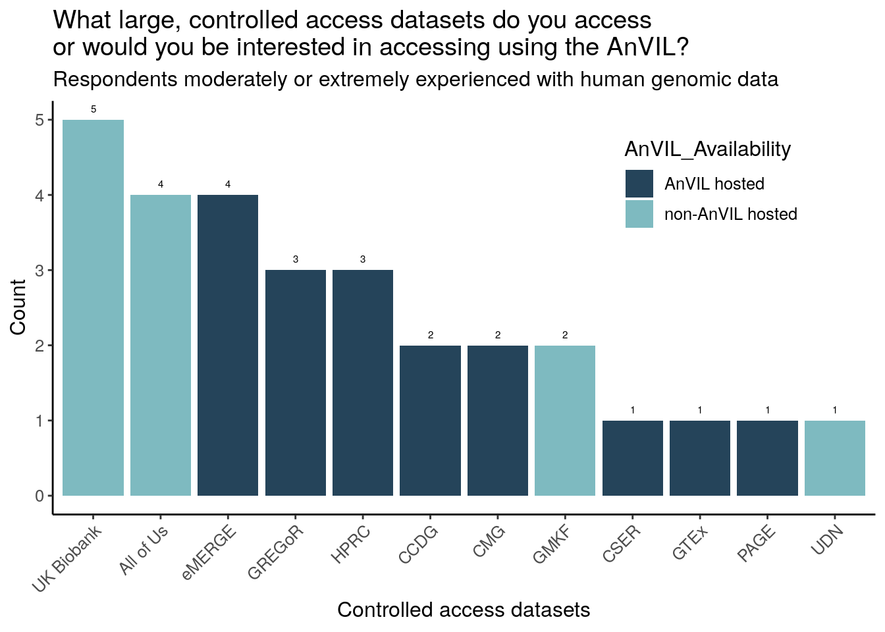

Except for Galaxy, potential users tend to report lower comfort levels for the various tools and technologies when compared to returning users. Where tools were present on and off AnVIL, returning users report similar comfort levels.
Overall, there is less comfort with containers or workflows than using various programming languages and integrated development environments (IDEs).
21 respondents report that they are extremely experienced in analyzing human genomic data, while only 6 respondents report that they are not at all experienced in analyzing human genomic data. However, for human clinical data and non-human genomic data, more respondents report being not at all experienced in analyzing those data than report being extremely experienced.
Over half of respondents report they are extremely interested in working with controlled access datasets.

Of the survey provided choices, respondents have accessed or are particularly interested in accessing All of Us, UK Biobank, and GTEx (though All of Us and UK Biobank are not currently AnVIL hosted). 2 respondents (moderately or extremely experienced with genomic data) specifically wrote in “TCGA”. The trend of All of Us, UK Biobank, and GTEx being chosen the most is consistent across all 3 research categories (moderately or extremely experienced with clinical, human genomic, or non-human genomic data).